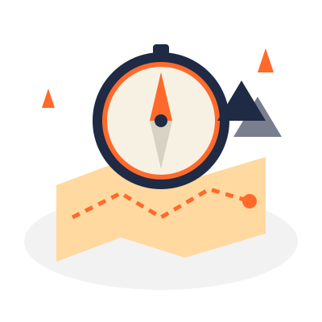
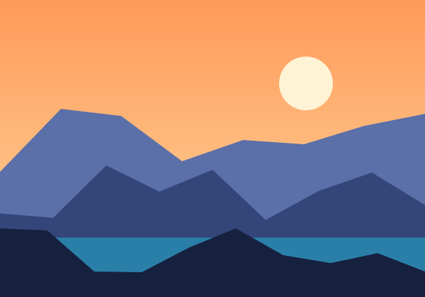
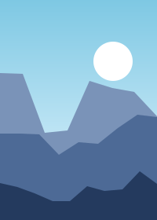
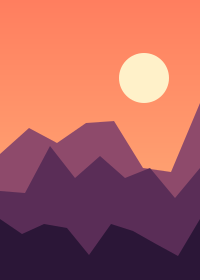
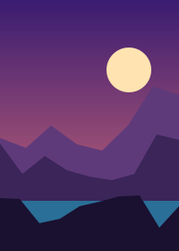

Onboarding 1

Let's get startedOnboarding 2
Onboarding 3
Trails
| Trail | Length | Level | Days |
|---|---|---|---|
| Ala-Kul Lake | 32 km | Hard | 3 |
| Ala-Archa | 18 km | Medium | 2 |
| Kol-Tor | 12 km | Easy | 1 |
| Altyn-Arashan | 24 km | Medium | 2 |
| Song-Kol | 40 km | Hard | 4 |
| Skazka Canyon | 8 km | Easy | 1 |
| Peak Lenin | 60 km | Hard | 14 |
| Jeti-Oguz | 14 km | Easy | 1 |
| Karakol Gorge | 20 km | Medium | 2 |
| Kegety Pass | 26 km | Medium | 2 |
Trail - Details

←Ala-Kul Lake
Karakol, Kyrgyzstan
Description
A famous high-altitude route to a turquoise lake at 3 532 m. The trail crosses alpine meadows, a rocky moraine and finishes at the Ala-Kul pass with views of Karakol peak.
Distance
32 km · 3 days · Elevation gain 1 800 m
Best season
July – September
Equipment
Trekking boots, tent, sleeping bag (−5 °C), poles, headlamp, water filter, first-aid kit.
Itinerary
Day 1: Karakol gorge to Altyn-Arashan camp. Day 2: ascent to Ala-Kul lake and pass. Day 3: descent via Sirota valley.
More like this


